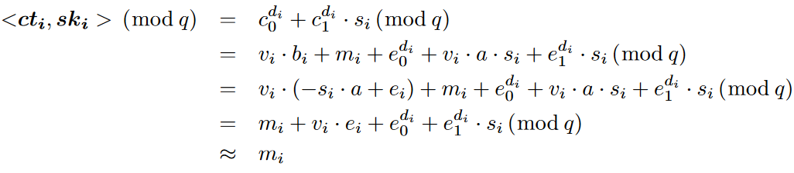
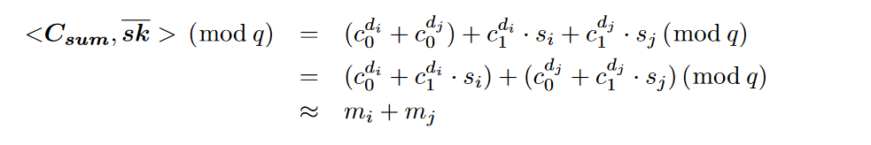
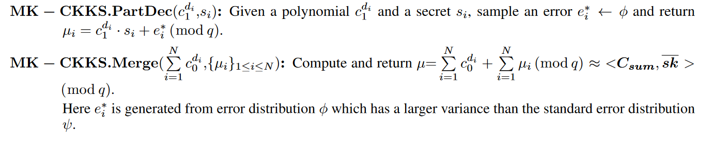

MK-CKKS
1 MK-CKKS
是一种基于错误环学习 (RLWE) 的同态加密方案。
R=Z[X]/(Xn+1)
R是分圆环，n是2的幂次，Z[X]是整数系数的多项式环，R中的元素满足Xn=−1。Rq=Zq[X]/(Xn+1)是 R 的残差环1，其系数以整数 q 为模。（Rq=Zq[X]/(Xn+1) 表示模 q 的多项式环 Zq[X] 通过关于多项式 Xn+1的同余关系构造出的一个剩余类环。)
对于参数 (n,q,χ,ψ)，我们的 RLWE 假设是，给定形式为 (a,b=s⋅a+e)∈Rq2,的多项式，当从 Rq 中均匀随机选择 a 时，项b 在计算上无法与 Rq 的均匀随机元素区分开来，s 从 Rq上的密钥分布χ 中选择，e 从 R 上的C错误分布 ψ 中抽取的 。
我们用粗体表示向量，并使用⟨u,v⟩ 表示两个向量 u 和 v 的点积。x←Γ表示根据分布 Γ 对 x 进行采样。λ 表示整篇论文的安全参数。g∈Zd是一个积分向量，called the gadget vector。MK-CKKS 假定公共参考字符串 (CRS) 模型，因此所有设备共享一个随机多项式向量 a←U(Rqd)，这里 U (·) 表示均匀分布。设ski=(1,si) 作为密钥 si，sk=(1,s1,...sN)用于连接多个密钥。cti=(c0di,c1di)是明文mi的密文来自远程设备 di，i=1,…,N
2 设置
对于给定的安全参数 λ，设置 RLWE 维数 n、密文模数 q、密钥分布 χ 和误差分布ψ 在 R上。生成一个随机向量。返回公共参数(n,q,χ,ψ)。远程设备 di生成其秘密密钥 si←χ，并计算其公钥为 bi=−si⋅a+ei∈Rq2，此处 ei是从 R 上的误差分布 ψ 中得出的误差向量。
3 编码和解码
在加密之前，首先将一个复数展开为一个向量，复数规范嵌入映射将其编码为环R的多项式。解码将解密后的多项式转换为复数向量。
4 加密
将消息向量编码为明文 mi（即分圆环的元素）后，di 将 mi加密为密文 cti=(c0di,c1di)其中c0di=vi⋅bi+mi+e0di(modq) 和c1di=vi⋅a+e1di(modq)。这里 a=a[0] 和 bi=bi[0],vi←χ 和 e0di,e1di←ψ。插入小错误以确保安全，并且可以在执行同态操作后通过舍入操作将其删除。在 MK-CKKS 中，与 N 个不同方相关联的附加密文的形式为Csum=def(∑i=1Nc0di,c1d1,c1d2,…,c1dN)∈RqN+1
Decryption of individual ciphertext. di 计算ski=(1,si)和 cti=(c0di,c1di)的点积，如下所示

5 加法同态
设cti=(c0di,c1di) 和ctj=(c0dj,c1dj) 是来自远程设备 di 和 dj 的明文消息 mi 和 mj 的两个密文。密文的总和是Csum=def(c0di+c0dj,c1di,c1dj)它可以通过计算 Csum 和sk=(1,si,sj) 的点积来解密。正确性证明如下：

6 解密总和
MK-CKKS 中引入了基于噪声泛洪的分布式解密，因为假设任何一方都持有多个密钥是不合理的。解密包括两种算法：部分解密和合并。

1. 残差环（Residue Ring）是一个环的剩余类环。给定一个环 R 和一个理想 I，则 I 中的每个元素 a 都可以对 R 中的每个元素取模得到一个剩余类 [a]。所有这些剩余类构成一个新的环，称为 R 对 I 的剩余类环，记作 R/I。具体来说，R/I 中的元素是形如 [a] 的剩余类，其中 a∈R 且 [a]=[b] 当且仅当 a−b∈I。R/I 中的加法和乘法运算分别定义为： [a]+[b]=[a+b] [a]⋅[b]=[ab]在密码学中，残差环常被用于构造离散对数问题，从而实现公钥密码学中的加密和签名算法，如 Diffie-Hellman 密钥交换、ElGamal 加密、DSS 签名等。常用的残差环包括模素数的剩余类环 Z/pZ，以及模多项式的剩余类环 Rq=Zq[X]/(f(X))，其中 f(X) 是一个不可约多项式 ↩